1. Decay#
Part of the Fig. 4 chapter — see it for the panel-by-panel map. The first code cell sets ENTEX_ROOT and activates the no-overwrite guard (see the Reproduction guide). Outputs shown are the author’s original run.
# === Reproduction setup — edit ENTEX_ROOT / REF_ROOT for your machine ===
import os, sys
ENTEX_ROOT = os.environ.get('ENTEX_ROOT', '/large_storage/zhoulab/zhoujt/project/ENTEx')
REF_ROOT = os.environ.get('REF_ROOT', '/large_storage/zhoulab/ref')
BOOK_ROOT = os.environ.get('BOOK_ROOT', f'{ENTEX_ROOT}/analysis/HumanCellEpigenomeAtlas')
sys.path.insert(0, BOOK_ROOT)
os.chdir(f'{ENTEX_ROOT}/analysis') # original working directory
import repro_guard # no-overwrite guard (default: skip existing)
import numpy as np
import pandas as pd
import seaborn as sns
import matplotlib as mpl
import matplotlib.pyplot as plt
import anndata
import scanpy as sc
from glob import glob
import time
from scipy.stats import spearmanr, pearsonr
from itertools import cycle, islice
mpl.style.use('default')
mpl.rcParams['pdf.fonttype'] = 42
mpl.rcParams['ps.fonttype'] = 42
mpl.rcParams['font.family'] = 'sans-serif'
mpl.rcParams['font.sans-serif'] = 'Helvetica'
indir = f'{ENTEX_ROOT}/'
outdir = f'{ENTEX_ROOT}/analysis/'
# group_meta = pd.read_csv(f'{indir}clustering/merged/group_meta.tsv', sep='\t', header=0, index_col=0)
# # group_meta = group_meta[['L2_any', 'L1', 'count']]
# group_meta['L1_annot'] = group_meta['L1_annot'].str.replace(' ','-').str.replace('/','_')
# annot2L1 = group_meta[['L1','L1_annot']].set_index('L1_annot')['L1'].to_dict()
# L1annot = group_meta[['L1','L1_annot']].set_index('L1')['L1_annot'].to_dict()
meta = anndata.read_h5ad(f'{indir}clustering/merged/5kCG100k3C_summary.h5ad').obs
# meta['L1'] = meta['L1'].astype(str)
# meta.loc[meta['L1']=='c7', 'L1'] = 'c35'
# meta.loc[(meta['L1']=='c35') & meta['L2_any'].isin(['c0','c10','c11']), 'L1'] = 'c36'
decay = pd.concat([pd.read_hdf(xx, key='data') for xx in glob(f'{outdir}decay/cell_*_decay.hdf5')], axis=0)
decay = decay.loc[meta.index]
decay = decay / decay.sum(axis=1).values[:,None]
L1_meta = pd.read_csv(f'{indir}L1color.tsv', sep='\t', header=0, index_col=0)
L1_meta = L1_meta.drop(['c35','c36'], axis=0)
L1_annot = L1_meta['L1_abbr'].to_dict()
L1_color = L1_meta['color'].to_dict()
(np.log2([200000,2000000,10000000,100000000])-np.log2(2500))/0.125
array([ 50.57542476, 77.15084952, 95.72627428, 122.30169904])
meta['short'] = decay.loc[:, (decay.columns > 50) & (decay.columns < 78)].mean(axis=1)
meta['long'] = decay.loc[:, (decay.columns > 95) & (decay.columns < 123)].mean(axis=1)
meta['ratio'] = np.log2(meta['short'] / meta['long'])
row_colors = meta['L1'].map(L1colors)
selc = meta.sort_values('ratio').index
cg = sns.clustermap(decay.loc[selc], metric='cosine', z_score=0, vmin=-2, vmax=4,
col_cluster=False, row_cluster=False, cmap='Blues',
row_colors=row_colors, figsize=(10,12))
ax = cg.ax_heatmap
xticks = [5000, 10000, 20000, 50000, 100000, 200000, 500000, 1000000, 2000000, 5000000, 10000000, 20000000, 50000000, 100000000]
xticklabels = ['5k', '10k', '20k', '50k', '100k', '200k', '500k', '1M', '2M', '5M', '10M', '20M', '50M', '100M']
ax.set_xticks([np.log2(xx/2500)/0.125 for xx in xticks])
ax.set_xticklabels(xticklabels, rotation=90, ha='center')
for xx in L1colors.index:
cg.ax_col_dendrogram.bar(0, 0, color=L1colors.loc[xx], label=L1annot[xx], linewidth=0)
cg.ax_col_dendrogram.legend(loc="center", ncol=5, framealpha=0)
for xx in [200000,2000000,10000000,100000000]:
ax.vlines(x=np.log2(xx/2500)/0.125, colors='k', ymin=-0.5, ymax=decay.shape[0]-0.5, linewidths=0.5)
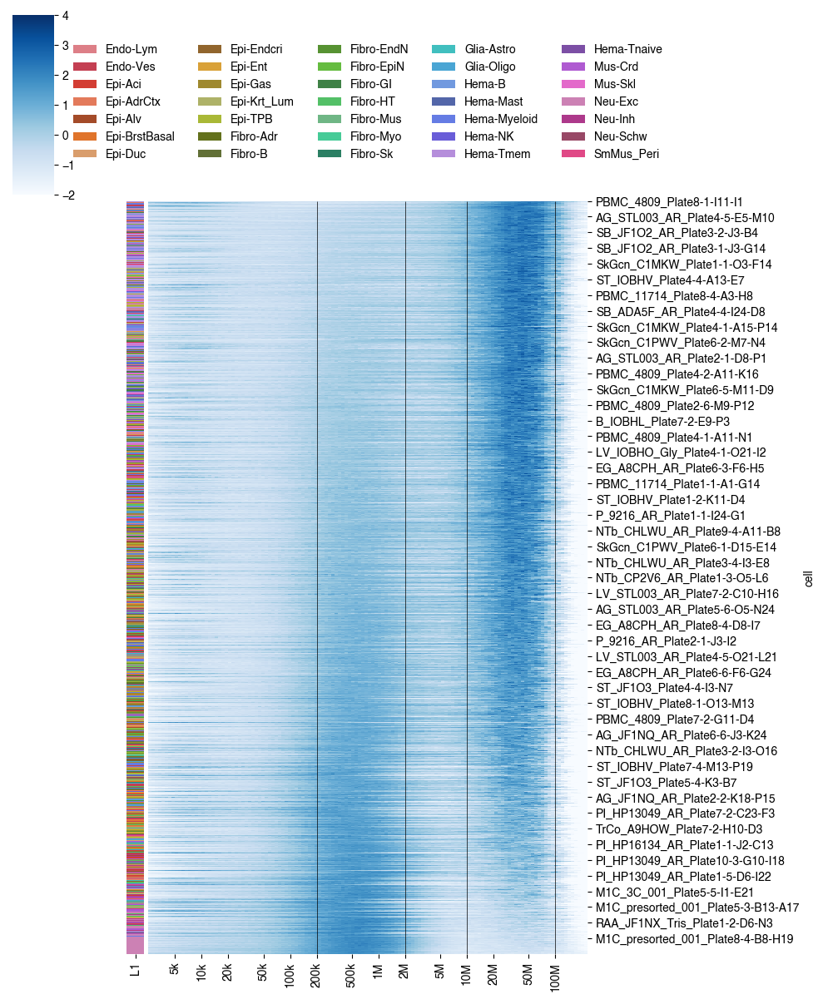
leg = meta.groupby('L1')['ratio'].median().sort_values().index[::-1]
selc = []
for xx in leg:
tmp = meta.loc[meta['L1']==xx]
selc.append(tmp.sort_values('ratio').index[::-1])
selc = np.concatenate(selc)
meta = meta.loc[selc]
decay = decay.loc[selc]
offset = [0]
count = meta['L1'].value_counts()
for xx in leg:
offset.append(offset[-1]+count.loc[xx])
offset = np.array(offset)
import matplotlib.patches as patches
from scipy.stats import zscore
fig, axes = plt.subplots(5, 1, gridspec_kw={'height_ratios': [20,1,1,1,1]}, figsize=(10,5), sharex='all', dpi=300)
ax = axes[0]
ax.imshow(zscore(decay, axis=1).T, cmap='Oranges', vmin=0, vmax=4,
aspect='auto', interpolation='none', rasterized=True)
ax.set_xticks([])
xticks = [5000, 50000, 500000, 5000000, 50000000]
xticklabels = ['5k', '50k', '500k', '5M', '50M']
ax.set_yticks([np.log2(xx/2500)/0.125 for xx in xticks])
ax.set_yticklabels(xticklabels, fontsize=12)
for xx in offset:
ax.vlines(x=xx-0.5, colors='k', ymin=-0.5, ymax=decay.shape[1]-0.5, linewidths=0.5)
ax = axes[1]
ax.axis('off')
# ax.set_ylabel('MajorType', rotation=0)
for i,xx in enumerate(leg):
rect = patches.Rectangle((offset[i], 0), offset[i+1]-offset[i], 1, linewidth=0, edgecolor='none', facecolor=L1_color[xx])
ax.add_patch(rect)
# ax.text(np.mean(offset[i:(i+2)]), -0.2, label, rotation=90, fontsize=10, horizontalalignment='left', verticalalignment='top')
ax = axes[2]
ax.imshow(meta['mCGFrac'].values[None, :], aspect='auto', vmin=0.65, vmax=0.85,
interpolation='none', cmap='Blues', rasterized=True)
ax.axis('off')
ax = axes[3]
ax.imshow(meta['mCHFrac'].values[None, :], aspect='auto', vmin=0.005, vmax=0.025,
interpolation='none', cmap='Purples', rasterized=True)
ax.axis('off')
ax = axes[4]
ax.imshow(np.log2(meta['Cis/Trans'].values[None, :]), aspect='auto', vmin=0, vmax=1.5,
interpolation='none', cmap='viridis', rasterized=True)
ax.axis('off')
for ax,xx in zip(axes, ['Contact Distance', 'MajorType', 'Global mCG', 'Global mCH', 'Cis/Trans']):
ax.set_title(xx, fontsize=15)
plt.tight_layout()
plt.savefig(f'decay/cell_{meta.shape[0]}_majortype_decay.pdf', transparent=True, dpi=300)
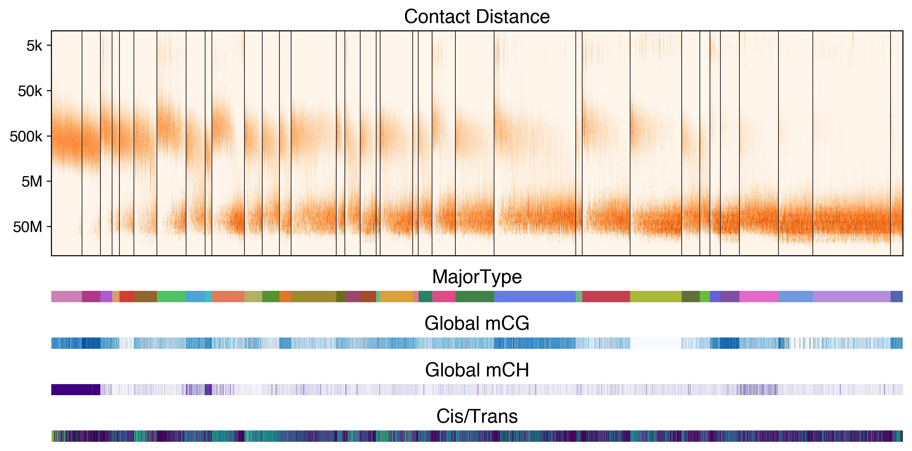
import matplotlib.patches as patches
from scipy.stats import zscore
tmp = zscore(decay, axis=1).T
fig, axes = plt.subplots(1, 35, gridspec_kw={'wspace':0}, figsize=(8,2), dpi=300)
for i,ax in enumerate(axes):
ax.imshow(tmp.iloc[:, offset[i]:offset[i+1]], cmap='Oranges', vmin=0, vmax=3,
aspect='auto', interpolation='none', rasterized=True)
ax.set_xticks([])
ax.set_yticks([])
ax = axes[0]
yticks = [5000, 50000, 500000, 5000000, 50000000]
yticklabels = ['5k', '50k', '500k', '5M', '50M']
ax.set_yticks([np.log2(xx/2500)/0.125 for xx in yticks])
ax.set_yticklabels(yticklabels, fontsize=12)
fig.tight_layout()
fig.savefig(f'decay/cell_{meta.shape[0]}_majortype_decay_equal.pdf', transparent=True, dpi=300)
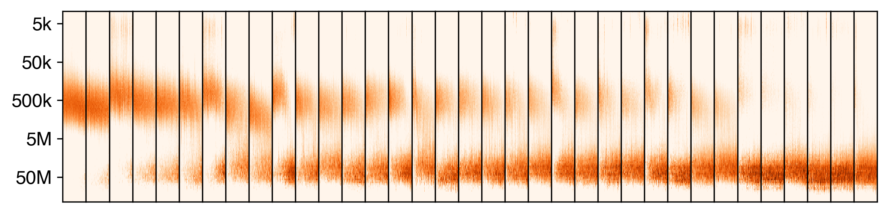
from scipy.stats import pearsonr
pearsonr(meta['Cis/Trans'], meta['ratio'])
PearsonRResult(statistic=0.18585073066665614, pvalue=0.0)
fig, ax = plt.subplots(figsize=(8,3), dpi=300)
sns.boxplot(data=meta, x='L1', y='ratio', order=leg, ax=ax, palette=L1_color, showfliers=False)
ax.set_xticklabels([L1_annot[xx] for xx in leg], rotation=-90)
plt.tight_layout()
plt.savefig(f'decay/cell_{meta.shape[0]}_majortype_decay_boxplot.pdf', transparent=True)
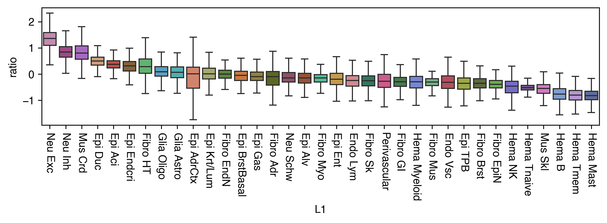
L1_annot['c21'] = 'Glia Schw'
germ_layer = {
# Endothelium / vasculature
"Endo Lymphatic": "mesoderm",
"Endo Vascular": "mesoderm",
# Epithelia
"Epi Acinar": "endoderm", # e.g. pancreatic / digestive acini
"Epi Adrenal": "mesoderm", # adrenal cortex (epithelioid steroidogenic cells)
"Epi Alveolar": "endoderm",
"Epi Breast Basal": "ectoderm",
"Epi Ductal": "ectoderm", # mammary duct epithelium
"Epi Endocrine": "endoderm", # gut/pancreatic endocrine epithelia
"Epi Enteric": "endoderm",
"Epi Gastric": "endoderm",
"Epi Keratinous/Luminal": "ectoderm", # epidermis / keratinocytes
"Epi Trophoblast": "ectoderm", # strictly trophectoderm/extraembryonic, but ectoderm-derived
# Fibroblasts / myofibroblasts
"Fibro Adrenal": "mesoderm",
"Fibro Breast": "mesoderm",
"Fibro Endoneurial": "mesoderm",
"Fibro Epineurial": "mesoderm",
"Fibro Gastrointestinal": "mesoderm",
"Fibro Heart": "mesoderm",
"Fibro Muscular": "mesoderm",
"Myofibroblast": "mesoderm",
"Fibro Skin": "mesoderm",
# Glia / neurons
"Glia Astrocyte": "ectoderm",
"Glia Oligodendrocyte": "ectoderm",
"Neu Excitatory": "ectoderm",
"Neu Inhibitory": "ectoderm",
"Glia Schwann": "ectoderm", # neural crest–derived
# Hematopoietic / immune
"Hema B": "mesoderm",
"Hema Mast": "mesoderm",
"Hema Myeloid": "mesoderm",
"Hema NK": "mesoderm",
"Hema Tmem": "mesoderm",
"Hema Tnaive": "mesoderm",
# Muscle / mural cells
"Mus Cardiac": "mesoderm",
"Mus Skeletal": "mesoderm",
"Perivascular": "mesoderm", # pericytes / mural cells
}
ratio_df = pd.DataFrame(meta.groupby('L1')['ratio'].median())
ratio_df['L1_annot'] = ratio_df.index.map(L1_annot)
ratio_df['L0'] = ratio_df['L1_annot'].str.split(' ').str[0]
ratio_df['germ_layer'] = ratio_df.index.map(L1_meta['L1_annot'].to_dict()).map(germ_layer)
ratio_df['L0'].value_counts()
L0
Epi 10
Fibro 9
Hema 6
Glia 3
Endo 2
Mus 2
Neu 2
Perivascular 1
Name: count, dtype: int64
fig, ax = plt.subplots(figsize=(3,3), dpi=300)
sns.stripplot(data=ratio_df, x='L0', y='ratio', hue='L1',
order=ratio_df.groupby('L0')['ratio'].mean().sort_values().index,
palette=L1_color, s=4, edgecolor='none', legend=False, ax=ax)
ax.set_xticklabels(ax.get_xticklabels(), rotation=90)
ax.set_xlabel('')
ax.set_ylabel('log2 Short/Long')
fig.tight_layout()
fig.savefig(f'decay/L0_decay_stripplot.pdf', transparent=True)
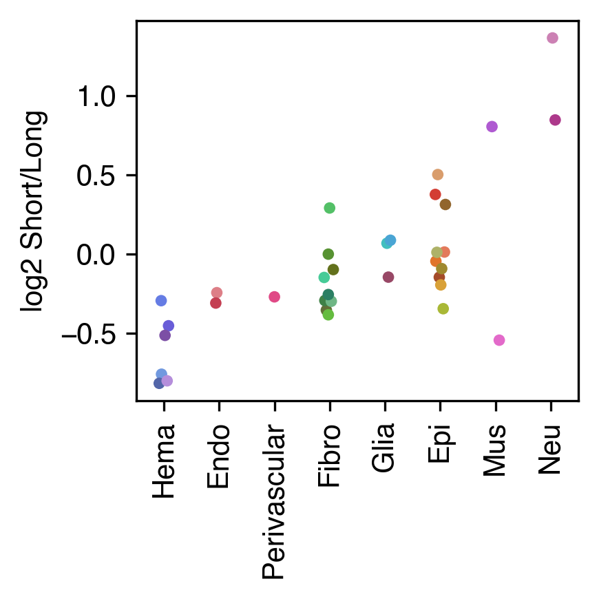
import itertools
from scipy.stats import ranksums
for ct1,ct2 in itertools.combinations(ratio_df['L0'].unique(), 2):
data1 = ratio_df.loc[ratio_df['L0']==ct1, 'ratio']
data2 = ratio_df.loc[ratio_df['L0']==ct2, 'ratio']
if (len(data1) < 2) or (len(data2) < 2):
continue
stat, pval = ranksums(data1, data2)
if pval < 0.05:
print(f'{ct1} vs {ct2}: s={stat:.3f}, p={pval:.3e}')
Epi vs Fibro: s=2.041, p=4.123e-02
Epi vs Hema: s=3.145, p=1.658e-03
Epi vs Neu: s=-2.148, p=3.169e-02
Fibro vs Hema: s=2.828, p=4.678e-03
Fibro vs Neu: s=-2.121, p=3.389e-02
Glia vs Hema: s=2.324, p=2.014e-02
Hema vs Neu: s=-2.000, p=4.550e-02
import itertools
from scipy.stats import ranksums
from statsmodels.sandbox.stats.multicomp import multipletests as FDR
pv = []
mt = []
for ct in ratio_df['L0'].unique():
data1 = ratio_df.loc[ratio_df['L0']==ct, 'ratio']
data2 = ratio_df.loc[ratio_df['L0']!=ct, 'ratio']
if (len(data1) < 2) or (len(data2) < 2):
continue
stat, pval = ranksums(data1, data2)
if pval < 0.05:
print(f'{ct}: s={stat:.3f}, p={pval:.3e}')
pv.append(pval)
mt.append(ct)
fdr = FDR(pv, 0.01, "fdr_bh")[1]
pd.Series(fdr, index=mt).sort_values()
Epi: s=1.972, p=4.863e-02
Hema: s=-3.458, p=5.447e-04
Neu: s=2.345, p=1.902e-02
Hema 0.003813
Neu 0.066558
Epi 0.113475
Glia 0.377869
Fibro 0.636910
Endo 0.636910
Mus 0.943345
dtype: float64
adata = anndata.read_h5ad(f'{indir}clustering/merged/5kCG100k3C_summary.h5ad')
adata.obs['Short/Long'] = meta['ratio'].copy()
adata.write_h5ad(f'{indir}clustering/merged/5kCG100k3C_summary.h5ad')
data = pd.concat([pd.read_pickle('/gale/netapp/home/wtian/hba/analysis/MultiModalityIntigration/RNA/vs-DNAm/integration-data/neu.majortype-transfered-from-mC.pdpkl'),
pd.read_pickle('/gale/netapp/home/wtian/hba/analysis/MultiModalityIntigration/RNA/vs-DNAm/integration-data/nonn.majortype-transfered-from-mC.pdpkl'),
], axis=0)
data
| Study | tsne_0 | tsne_1 | roi4color | pred_from_mC | pred_from_mC_prob | |
|---|---|---|---|---|---|---|
| HBA_211005_H1930002_CX48_BL_La_2_P8-1-D8-I13 | mC | -17.191321 | -5.335488 | AMY | Amy | 1.0 |
| HBA_211005_H1930002_CX48_BL_La_2_P8-1-D8-C1 | mC | -17.216187 | -5.233585 | AMY | Amy | 1.0 |
| HBA_211005_H1930002_CX48_BL_La_2_P8-3-D8-M5 | mC | -17.220816 | -5.295431 | AMY | Amy | 1.0 |
| HBA_211005_H1930002_CX48_BL_La_2_P8-1-D8-A14 | mC | -17.231431 | -5.293575 | AMY | Amy | 1.0 |
| HBA_211005_H1930002_CX48_BL_La_2_P4-4-B6-M7 | mC | -17.189190 | -5.387228 | AMY | Amy | 1.0 |
| ... | ... | ... | ... | ... | ... | ... |
| XH_496.TTTCTGTCGGGACGTCCCTCAT | atac | -4.237938 | -0.085277 | A44-A45 | ODC | 1.0 |
| XH_496.TTTCTGTCGGGGATACTCGTGA | atac | -3.119405 | -0.911814 | A44-A45 | ODC | 1.0 |
| XH_496.TTTCTGTCGGGGGCATAAACGT | atac | 9.439809 | 2.183109 | A44-A45 | ASC | 1.0 |
| XH_496.TTTCTGTCGGGTGACGCGGTAT | atac | 9.575575 | 2.205444 | A44-A45 | ASC | 1.0 |
| XH_496.TTTCTGTCGGTGTTACTTCCCG | atac | -7.537348 | -0.229422 | A44-A45 | ODC | 1.0 |
3312355 rows × 6 columns
rnameta = pd.read_hdf('/gale/netapp/home/wtian/hba/analysis/MultiModalityIntigration/RNA/clustering/based-on-kim-20220729/cell_meta.qced.pdhdf')
rnameta
| Age | Agetext | Ageunit | All_fc_analysis_id | Analysis | BarcodeTotalUMIs | CellCycle | CellCycle_G1 | CellCycle_G2M | CellCycle_S | ... | targetnumcells | tissue | transcriptome | unspliced_ratio | Cluster | Class | Subclass | MTG_Classifier | good | supregion | |
|---|---|---|---|---|---|---|---|---|---|---|---|---|---|---|---|---|---|---|---|---|---|
| CellID | |||||||||||||||||||||
| 10X357_3:TTCCTAAAGCCTGCCA | 42.0 | 42y | years | 6387 | Queueing | 784.0 | 0.001756 | 0.000702 | 0.001054 | 0.0 | ... | 5000 | Amygdaloid complex (AMY) - Basolateral nuclear... | hg38-final3 | 0.618195 | 467.0 | Oligodendrocyte lineage | Oligodendrocyte | Oligo | True | NaN |
| 10X357_3:TGCAGGCGTATCACCA | 42.0 | 42y | years | 6387 | Queueing | 708.0 | 0.000294 | 0.000000 | 0.000294 | 0.0 | ... | 5000 | Amygdaloid complex (AMY) - Basolateral nuclear... | hg38-final3 | 0.709032 | 466.0 | Oligodendrocyte lineage | Oligodendrocyte | Oligo | True | NaN |
| 10X357_4:TATTCCAGTGTTTGCA | 42.0 | 42y | years | 6391 | Queueing | 1330.0 | 0.001487 | 0.000406 | 0.001082 | 0.0 | ... | 5000 | Amygdaloid complex (AMY) - Basolateral nuclear... | hg38-final3 | 0.756793 | 465.0 | Oligodendrocyte lineage | Oligodendrocyte | Oligo | True | NaN |
| 10X357_4:TATTCCACAGATAAAC | 42.0 | 42y | years | 6391 | Queueing | 671.0 | 0.000958 | 0.000240 | 0.000719 | 0.0 | ... | 5000 | Amygdaloid complex (AMY) - Basolateral nuclear... | hg38-final3 | 0.755870 | 467.0 | Oligodendrocyte lineage | Oligodendrocyte | Oligo | True | NaN |
| 10X353_6:TTATTGCAGCCTGTCG | 29.0 | 29y | years | 6386 | Queueing | 516.0 | 0.002919 | 0.000584 | 0.002335 | 0.0 | ... | 5000 | Amygdaloid complex (AMY) - Basolateral nuclear... | hg38-final3 | 0.596030 | 467.0 | Oligodendrocyte lineage | Oligodendrocyte | Oligo | True | NaN |
| ... | ... | ... | ... | ... | ... | ... | ... | ... | ... | ... | ... | ... | ... | ... | ... | ... | ... | ... | ... | ... | ... |
| 10X230_5:GTTCCGTAGCCTGTGC | 29.0 | 29y | years | 3421 | Queueing | 460.0 | 0.002693 | 0.000770 | 0.001924 | 0.0 | ... | 5000 | Body of hippocampus (HiB) - Rostral DG-CA4 | GRCh38-3.0.0 | 0.762216 | 522.0 | Doublets/BadCells | Doublets/BadCells | NaN | False | HIF |
| 10X230_6:GTGTTAGAGAACTTCC | 29.0 | 29y | years | 3420 | Queueing | 386.0 | 0.000000 | 0.000000 | 0.000000 | 0.0 | ... | 5000 | Body of hippocampus (HiB) - Rostral DG-CA4 | GRCh38-3.0.0 | 0.695473 | 522.0 | Doublets/BadCells | Doublets/BadCells | NaN | False | HIF |
| 10X230_5:AAGTGAAGTATCGTAC | 29.0 | 29y | years | 3421 | Queueing | 304.0 | 0.000633 | 0.000000 | 0.000633 | 0.0 | ... | 5000 | Body of hippocampus (HiB) - Rostral DG-CA4 | GRCh38-3.0.0 | 0.736542 | 522.0 | Doublets/BadCells | Doublets/BadCells | NaN | False | HIF |
| 10X230_6:ACTATGGCAGCATCTA | 29.0 | 29y | years | 3420 | Queueing | 383.0 | 0.001461 | 0.000487 | 0.000974 | 0.0 | ... | 5000 | Body of hippocampus (HiB) - Rostral DG-CA4 | GRCh38-3.0.0 | 0.721519 | 522.0 | Doublets/BadCells | Doublets/BadCells | NaN | False | HIF |
| 10X230_6:GCATCGGAGCTCACTA | 29.0 | 29y | years | 3420 | Queueing | 467.0 | 0.002092 | 0.000000 | 0.002092 | 0.0 | ... | 5000 | Body of hippocampus (HiB) - Rostral DG-CA4 | GRCh38-3.0.0 | 0.728452 | 522.0 | Doublets/BadCells | Doublets/BadCells | NaN | False | HIF |
3753176 rows × 88 columns
rnameta = rnameta.loc[data.index[data['Study']=='10x']]
rnameta['pred_from_mC'] = data.loc[rnameta.index, 'pred_from_mC'].values
rnameta.groupby('pred_from_mC')['BarcodeTotalUMIs'].mean().sort_values()
pred_from_mC
MGC 1507.150281
OPC 1530.438910
CB 1577.102402
EC 1782.478528
PC 1875.003656
ASC 1913.715319
ODC 2094.553364
VLMC 2120.804554
HIF_Unk1 2835.054162
PKJ 2904.914740
Sst 2924.535430
DG 2991.164842
HIF_Unk2 3058.166667
Vip 3218.150187
Pvalb_ChC 3279.701401
Lamp5 3405.575989
Foxp2 3546.309323
Sncg 3614.803146
THM_MB 3845.490880
CA2 3904.791088
Lamp5_LHX6 3966.352144
Pvalb 4073.042010
L4_IT 4080.750316
CHD7 4260.011995
MSN_D1 4285.153611
MSN_D2 4356.889047
L56_NP 4406.802867
Amy 4514.198859
SubCtx 4755.717839
L6_CT 4814.384522
L23_IT 4947.680716
L6_IT_Car3 5150.352412
PN 5379.523188
L5_IT 5545.719476
L6b 5646.123165
THM_Inh 5744.640191
L6_IT 5887.079002
CA3 7135.186367
CA1 7734.639673
THM_Exc 7900.103204
L5_ET 8291.576484
Name: BarcodeTotalUMIs, dtype: float64
meta.groupby('MajorType')['ratio'].mean().sort_values()
MajorType
EC -0.511544
PC -0.495670
MGC -0.428365
VLMC -0.244641
ODC -0.215347
ASC 0.236921
OPC 0.435832
Sst 1.036234
Pvalb_ChC 1.065168
Lamp5 1.079075
Vip 1.167030
Sncg 1.202621
Lamp5_LHX6 1.239027
Pvalb 1.307074
L4_IT 1.359731
CHD7 1.538960
Foxp2 1.570183
L23_IT 1.610786
L56_NP 1.643477
L5_IT 1.698091
L6_CT 1.755064
MSN_D2 1.827863
SubCtx 1.841502
MSN_D1 1.858230
L6_IT_Car3 1.899537
L6_IT 1.907716
L6b 1.987252
Amy 2.054128
L5_ET 2.224536
Name: ratio, dtype: float64
from scipy.stats import pearsonr
pearsonr(meta.groupby('MajorType')['ratio'].mean().loc[leg], rnameta.groupby('pred_from_mC')['BarcodeTotalUMIs'].mean().loc[leg])
(0.8731596483389721, 6.4613468246853e-10)
fig, ax = plt.subplots(figsize=(4,4))
ax.scatter(rnameta.groupby('pred_from_mC')['BarcodeTotalUMIs'].mean().loc[leg], meta.groupby('MajorType')['ratio'].mean().loc[leg], c=pd.Series(leg).map(colordict))
for xx in leg:
ax.text(rnameta.groupby('pred_from_mC')['BarcodeTotalUMIs'].mean().loc[xx], meta.groupby('MajorType')['ratio'].mean().loc[xx], xx)
ax.set_xlabel('Total 10x UMI')
ax.set_ylabel('Short/Long Ratio')
plt.savefig(f'{indir}/plot/celltype_ratio_rnacount_corr.pdf', transparent=True)
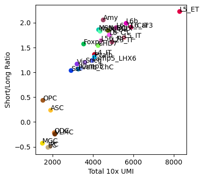
motifad = anndata.read_h5ad('/gale/netapp/home/wtian/hba/analysis/MotifEnrich/MajorType/dmr.MajorType.rho08.dist250.filter1.repflt/qry.h5ad')
motifad
AnnData object with n_obs × n_vars = 1887429 × 746
motifad.obs['dmr'] = ['_'.join(xx.split('_')[:-1]) for xx in motifad.obs.index]
for xx in leg:
tmp = pd.read_csv(f'/gale/netapp/home/wtian/hba/analysis/DMR/DMR-results/MajorType-hyp/hypo.{xx}.bed', sep='\t', header=None, index_col=3).index
motifad.obs[xx] = motifad.obs['dmr'].isin(tmp)
print(xx)
L5_ET
Amy
MSN_D2
L6b
L6_IT
MSN_D1
L6_IT_Car3
CHD7
L6_CT
L5_IT
L23_IT
SubCtx
Foxp2
L56_NP
L4_IT
Pvalb
Sncg
Lamp5_LHX6
Vip
Lamp5
Pvalb_ChC
Sst
OPC
ASC
ODC
VLMC
MGC
EC
ctmotif = pd.DataFrame(index=motifad.var.index, columns=leg)
count = {}
for xx in leg:
ctmotif[xx] = motifad.X[motifad.obs[xx].values].sum(axis=0).A1
count[xx] = motifad.obs[xx].sum()
print(xx)
L5_ET
Amy
MSN_D2
L6b
L6_IT
MSN_D1
L6_IT_Car3
CHD7
L6_CT
L5_IT
L23_IT
SubCtx
Foxp2
L56_NP
L4_IT
Pvalb
Sncg
Lamp5_LHX6
Vip
Lamp5
Pvalb_ChC
Sst
OPC
ASC
ODC
VLMC
MGC
EC
ctmotif
| MajorType | L5_ET | Amy | MSN_D2 | L6b | L6_IT | MSN_D1 | L6_IT_Car3 | CHD7 | L6_CT | L5_IT | ... | Vip | Lamp5 | Pvalb_ChC | Sst | OPC | ASC | ODC | VLMC | MGC | EC |
|---|---|---|---|---|---|---|---|---|---|---|---|---|---|---|---|---|---|---|---|---|---|
| id | |||||||||||||||||||||
| MA0002.2 | 212336 | 197899 | 128823 | 183403 | 189883 | 121627 | 155322 | 56659 | 167265 | 118764 | ... | 46469 | 87346 | 64887 | 30383 | 193916 | 154319 | 245620 | 296044 | 263881 | 340005 |
| MA0003.4 | 94241 | 87725 | 59721 | 79281 | 89233 | 55749 | 75254 | 28368 | 78475 | 54361 | ... | 21799 | 35807 | 28753 | 11677 | 101771 | 86350 | 116741 | 150214 | 134299 | 160612 |
| MA0004.1 | 170956 | 161450 | 107815 | 148109 | 155471 | 101348 | 128581 | 47664 | 138476 | 97776 | ... | 38327 | 67686 | 50845 | 24215 | 159122 | 125377 | 197106 | 239484 | 215410 | 272840 |
| MA0006.1 | 210285 | 195647 | 128857 | 180590 | 188465 | 121622 | 154299 | 55922 | 165968 | 117622 | ... | 45665 | 85408 | 63641 | 29991 | 191179 | 152521 | 241040 | 288178 | 257305 | 330048 |
| MA0007.3 | 18936 | 17084 | 10868 | 15950 | 16507 | 10204 | 13593 | 5207 | 14818 | 10710 | ... | 4572 | 7437 | 5620 | 2562 | 19857 | 15677 | 23798 | 26597 | 23410 | 30519 |
| ... | ... | ... | ... | ... | ... | ... | ... | ... | ... | ... | ... | ... | ... | ... | ... | ... | ... | ... | ... | ... | ... |
| MA1654.1 | 2152 | 1887 | 1330 | 1724 | 2002 | 1215 | 1712 | 636 | 1830 | 1269 | ... | 468 | 726 | 559 | 222 | 2340 | 1988 | 2609 | 3352 | 3250 | 3673 |
| MA1655.1 | 146385 | 136935 | 88648 | 127493 | 133545 | 83412 | 110002 | 43356 | 119704 | 84087 | ... | 34532 | 61470 | 46040 | 21596 | 143653 | 115841 | 175678 | 210568 | 184617 | 233068 |
| MA1656.1 | 81162 | 76235 | 49995 | 70477 | 78318 | 46678 | 64157 | 25241 | 67531 | 47076 | ... | 20254 | 33074 | 24819 | 10114 | 87290 | 74340 | 101015 | 125703 | 111829 | 136326 |
| MA1657.1 | 109242 | 99724 | 66308 | 93364 | 92165 | 63311 | 76241 | 24988 | 81949 | 57882 | ... | 21163 | 44573 | 33215 | 15964 | 92637 | 71684 | 121912 | 146692 | 129664 | 172961 |
| MA1683.1 | 198425 | 183756 | 116326 | 171346 | 171747 | 110215 | 139724 | 49743 | 151156 | 107872 | ... | 41743 | 82754 | 60718 | 29402 | 169099 | 131378 | 221552 | 268008 | 234241 | 313973 |
746 rows × 28 columns
ctmotif = ctmotif / pd.Series(count)
ctmotif.loc['MA0139.1']
MajorType
L5_ET 0.132237
Amy 0.144074
MSN_D2 0.137590
L6b 0.129571
L6_IT 0.147115
MSN_D1 0.134583
L6_IT_Car3 0.149571
CHD7 0.182074
L6_CT 0.151211
L5_IT 0.149601
L23_IT 0.154947
SubCtx 0.164827
Foxp2 0.135944
L56_NP 0.165907
L4_IT 0.170968
Pvalb 0.125340
Sncg 0.120822
Lamp5_LHX6 0.110156
Vip 0.165769
Lamp5 0.119768
Pvalb_ChC 0.136436
Sst 0.104135
OPC 0.186344
ASC 0.196349
ODC 0.167484
VLMC 0.171902
MGC 0.175700
EC 0.159372
Name: MA0139.1, dtype: float64
meta.groupby('MajorType')['ratio'].mean().loc[leg]
MajorType
L5_ET 12.936391
Amy 11.586932
MSN_D2 11.036784
L6b 10.638600
L6_IT 10.376866
MSN_D1 10.244872
L6_IT_Car3 10.009854
CHD7 9.281814
L6_CT 9.114454
L5_IT 8.920203
L23_IT 8.596515
SubCtx 8.493078
Foxp2 8.470961
L56_NP 8.186145
L4_IT 6.778601
Pvalb 6.732397
Sncg 6.343550
Lamp5_LHX6 6.258996
Vip 5.985944
Lamp5 5.600183
Pvalb_ChC 5.572600
Sst 5.488075
OPC 3.612811
ASC 3.153866
ODC 2.298176
VLMC 2.079371
MGC 2.002575
EC 1.989937
Name: ratio, dtype: float64
from scipy.stats import spearmanr
pearsonr(meta.groupby('MajorType')['ratio'].mean().loc[leg], ctmotif.loc['MA0139.1'])
(-0.3578226631238664, 0.06154826327231145)
ratio = meta.groupby(hue)['ratio'].mean().loc[leg]
leg0 = ['L23_IT', 'L4_IT', 'L5_IT', 'L6_IT', 'L6_IT_Car3', 'L56_NP', 'L6_CT', 'L6b', 'L5_ET', 'Amy',
'Lamp5', 'Lamp5_LHX6', 'Sncg', 'Vip', 'Pvalb', 'Pvalb_ChC', 'Sst', 'CHD7',
'MSN_D1', 'MSN_D2', 'Foxp2', 'SubCtx',
'ASC', 'ODC', 'OPC', 'MGC', 'PC', 'EC', 'VLMC'
]
legname = ['L2/3-IT', 'L4-IT', 'L5-IT', 'L6-IT', 'L6-IT-Car3', 'L5/6-NP', 'L6-CT', 'L6b', 'L5-ET', 'Amy-Exc',
'Lamp5', 'Lamp5-Lhx6', 'Sncg', 'Vip', 'Pvalb', 'Pvalb-ChC', 'Sst', 'Chd7',
'MSN-D1', 'MSN-D2', 'Foxp2', 'SubCtx-Cplx',
'ASC', 'ODC', 'OPC', 'MGC', 'PC', 'EC', 'VLMC'
]
sad = np.load(f'{indir}compartment_majortype/saddle_impute_mergerawpca.npy')
ws = 10
compstr = [[sad[i][:ws, :ws].mean(), sad[i][-ws:, -ws:].mean(),
np.mean([sad[i][:ws, -ws:].mean(), sad[i][-ws:, :ws].mean()])]
for i in range(len(leg)+1)]
compstr = pd.DataFrame(compstr, index=leg0+['merged'], columns=['BB', 'AA', 'Inter'])
compstr['Strength'] = compstr[['BB','AA']].mean(axis=1) / compstr['Inter']
# impute
fig, axes = plt.subplots(1, 4, figsize=(14,3), sharey='all')
for i,x in enumerate(compstr.columns):
ax = axes[i]
ax.scatter(compstr.loc[leg, x], ratio, c=pd.Series(leg).map(colordict))
# for k,xx in enumerate(leg0):
# ax.text(compstr.loc[xx, x], ratio.loc[xx], legname[k])
ax.set_title(f'r={np.around(pearsonr(compstr.loc[leg, x], ratio)[0], decimals=3)}', fontsize=10)
ax.set_xlabel(x, fontsize=10)
# plt.tight_layout()
plt.savefig(f'{indir}/plot/celltype_ratio_compstr_impute_corr.pdf', transparent=True)
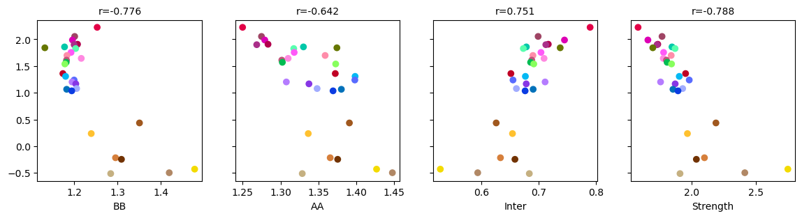
for i,x in enumerate(compstr.columns):
print(pearsonr(compstr.loc[leg, x], ratio))
(-0.7762692484365825, 7.455693655179459e-07)
(-0.6423581911681051, 0.00017199932956680274)
(0.7510620754485567, 2.6756580060990923e-06)
(-0.7883356225005858, 3.811698818638039e-07)
sad = np.load(f'{indir}compartment_majortype/saddle_raw_mergerawpca.npy')
ws = 10
compstr = [[sad[i][:ws, :ws].mean(), sad[i][-ws:, -ws:].mean(),
np.mean([sad[i][:ws, -ws:].mean(), sad[i][-ws:, :ws].mean()])]
for i in range(len(leg)+1)]
compstr = pd.DataFrame(compstr, index=leg0+['merged'], columns=['BB', 'AA', 'Inter'])
compstr['Strength'] = compstr[['BB','AA']].mean(axis=1) / compstr['Inter']
# raw
fig, axes = plt.subplots(1, 4, figsize=(14,3), sharey='all')
for i,x in enumerate(compstr.columns):
ax = axes[i]
ax.scatter(compstr.loc[leg, x], ratio, c=pd.Series(leg).map(colordict))
# for k,xx in enumerate(leg0):
# ax.text(compstr.loc[xx, x], ratio.loc[xx], legname[k])
ax.set_title(f'r={np.around(pearsonr(compstr.loc[leg, x], ratio)[0], decimals=3)}', fontsize=10)
ax.set_xlabel(x, fontsize=10)
# plt.tight_layout()
plt.savefig(f'{indir}/plot/celltype_ratio_compstr_raw_corr.pdf', transparent=True)
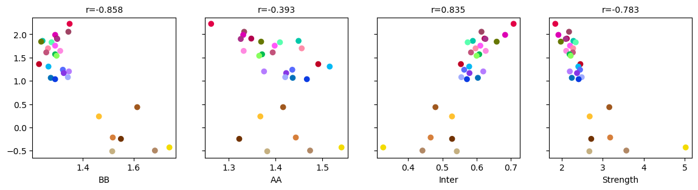
for i,x in enumerate(compstr.columns):
print(pearsonr(compstr.loc[leg, x], ratio))
(-0.8576089359970456, 2.796463213405639e-09)
(-0.3931056867974746, 0.03489332195204961)
(0.8352935445052595, 1.7367571106855158e-08)
(-0.7825824278518084, 5.276133139380073e-07)
fig, ax = plt.subplots(figsize=(3,2), dpi=300)
ax.axis('off')
coordx = np.repeat(np.arange(3),10)[:-1]
coordy = np.tile(np.arange(10), 3)[:-1]
ax.scatter(coordx-0.1, coordy, c=[colordict[xx] for xx in leg0])
for i,xx in enumerate(legname):
ax.text(coordx[i], coordy[i], xx, ha='left', va='center')
ax.invert_yaxis()
plt.savefig(f'{indir}/plot/celltype_legend.pdf', transparent=True)
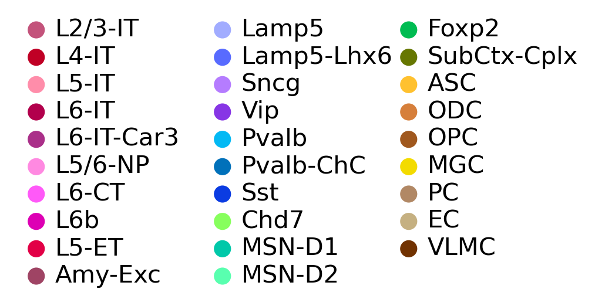
Liu 2021#
indir = '/gale/netapp/entex/HBA/snm3C/decay/Liu2021/'
from wmb import cemba
meta = cemba.get_m3c_mapping_metric()
meta
| mCCCFrac | mCGFrac | mCHFrac | FinalmCReads | DissectionRegion | Plate | Col384 | Row384 | Slice | Sample | ... | CisLongRatio | TransContact | TransRatio | Technology | InputReads | PassBasicQC | PlateNormCov | CEMBARegion | MajorRegion | SubRegion | |
|---|---|---|---|---|---|---|---|---|---|---|---|---|---|---|---|---|---|---|---|---|---|
| cell | |||||||||||||||||||||
| CEMBA191126_9J_1-CEMBA191126_9J_2-A1-AD002 | 0.004221 | 0.704487 | 0.008457 | 3351057 | HPF-2 | CEMBA191126_9J_1 | 0 | 1 | 9 | CEMBA191126_9J | ... | 0.226522 | 203408 | 0.117162 | snm3C-seq | 5325450 | True | 2.681377 | 9J | HPF | HIP |
| CEMBA191126_9J_1-CEMBA191126_9J_2-A1-AD004 | 0.004694 | 0.711583 | 0.008305 | 7339138 | HPF-2 | CEMBA191126_9J_1 | 1 | 0 | 9 | CEMBA191126_9J | ... | 0.225642 | 464628 | 0.121757 | snm3C-seq | 11527562 | True | 5.872473 | 9J | HPF | HIP |
| CEMBA191126_9J_1-CEMBA191126_9J_2-A1-AD006 | 0.004626 | 0.712702 | 0.009139 | 1562166 | HPF-2 | CEMBA191126_9J_1 | 1 | 1 | 9 | CEMBA191126_9J | ... | 0.258975 | 101302 | 0.125669 | snm3C-seq | 2600118 | True | 1.249980 | 9J | HPF | HIP |
| CEMBA191126_9J_1-CEMBA191126_9J_2-A1-AD007 | 0.003694 | 0.662486 | 0.004810 | 1427822 | HPF-2 | CEMBA191126_9J_2 | 0 | 0 | 9 | CEMBA191126_9J | ... | 0.164245 | 81962 | 0.111194 | snm3C-seq | 2278846 | True | 1.256558 | 9J | HPF | HIP |
| CEMBA191126_9J_1-CEMBA191126_9J_2-A1-AD008 | 0.004966 | 0.713724 | 0.009948 | 1394985 | HPF-2 | CEMBA191126_9J_2 | 0 | 1 | 9 | CEMBA191126_9J | ... | 0.246095 | 85557 | 0.119172 | snm3C-seq | 2372930 | True | 1.227659 | 9J | HPF | HIP |
| ... | ... | ... | ... | ... | ... | ... | ... | ... | ... | ... | ... | ... | ... | ... | ... | ... | ... | ... | ... | ... | ... |
| CEMBA3C_18A3C_R2_P3-4-B6-O8 | 0.005491 | 0.717344 | 0.010345 | 2444290 | CB-2 | CEMBA3C_18A3C_R2_P3 | 7 | 14 | 18 | CEMBA3C_18A3C_R2 | ... | 0.199120 | 151285 | 0.119620 | snm3C-seq | 4331410 | True | 1.082704 | 18A3C | CB | CB |
| CEMBA3C_18A3C_R2_P3-4-B6-P19 | 0.005794 | 0.719815 | 0.010979 | 2176294 | CB-2 | CEMBA3C_18A3C_R2_P3 | 18 | 15 | 18 | CEMBA3C_18A3C_R2 | ... | 0.196232 | 140641 | 0.125097 | snm3C-seq | 3909684 | True | 0.963994 | 18A3C | CB | CB |
| CEMBA3C_18A3C_R2_P3-4-B6-P20 | 0.004305 | 0.714725 | 0.008890 | 1334611 | CB-2 | CEMBA3C_18A3C_R2_P3 | 19 | 15 | 18 | CEMBA3C_18A3C_R2 | ... | 0.185141 | 70487 | 0.103228 | snm3C-seq | 2243776 | True | 0.591169 | 18A3C | CB | CB |
| CEMBA3C_18A3C_R2_P3-4-B6-P7 | 0.004958 | 0.724756 | 0.011000 | 1794581 | CB-2 | CEMBA3C_18A3C_R2_P3 | 6 | 15 | 18 | CEMBA3C_18A3C_R2 | ... | 0.218942 | 115189 | 0.125694 | snm3C-seq | 2998212 | True | 0.794914 | 18A3C | CB | CB |
| CEMBA3C_18A3C_R2_P3-4-B6-P8 | 0.006557 | 0.750322 | 0.017107 | 2264407 | CB-2 | CEMBA3C_18A3C_R2_P3 | 7 | 15 | 18 | CEMBA3C_18A3C_R2 | ... | 0.153701 | 135985 | 0.116523 | snm3C-seq | 3988576 | True | 1.003024 | 18A3C | CB | CB |
176003 rows × 21 columns
contact_table = pd.read_csv(cemba.CEMBA_SNM3C_CONTACT_PATH, index_col=0)
contact_table = contact_table[contact_table['0'].str.split('/').str[6].isin([f'HIP{i+1}' for i in range(4)])]
import xarray as xr
annot = xr.open_zarr(f'{cemba.CEMBA_SNM3C_CELL_TYPE_ANNOTATION_PATH}/CEMBA.snm3C.Annotations.zarr/')
annot
<xarray.Dataset>
Dimensions: (cell: 176003, L4Region_cat: 2363, l1_tsne: 2, l1_umap: 2, l2_tsne: 2, l2_umap: 2, l3_tsne: 2, l3_umap: 2, l4_tsne: 2, l4_umap: 2)
Coordinates:
* L4Region_cat (L4Region_cat) <U18 'c0_c0_c0_c0_r0' ... 'c9_c9_c3_c3...
* cell (cell) <U45 'CEMBA191126_9J_1-CEMBA191126_9J_2-A1-AD0...
* l1_tsne (l1_tsne) <U9 'l1_tsne_0' 'l1_tsne_1'
* l1_umap (l1_umap) <U9 'l1_umap_0' 'l1_umap_1'
* l2_tsne (l2_tsne) <U9 'l2_tsne_0' 'l2_tsne_1'
* l2_umap (l2_umap) <U9 'l2_umap_0' 'l2_umap_1'
* l3_tsne (l3_tsne) <U9 'l3_tsne_0' 'l3_tsne_1'
* l3_umap (l3_umap) <U9 'l3_umap_0' 'l3_umap_1'
* l4_tsne (l4_tsne) <U9 'l4_tsne_0' 'l4_tsne_1'
* l4_umap (l4_umap) <U9 'l4_umap_0' 'l4_umap_1'
Data variables: (12/15)
CellType (cell) <U32 dask.array<chunksize=(176003,), meta=np.ndarray>
L1 (cell) <U3 dask.array<chunksize=(176003,), meta=np.ndarray>
L2 (cell) <U3 dask.array<chunksize=(176003,), meta=np.ndarray>
L3 (cell) <U3 dask.array<chunksize=(176003,), meta=np.ndarray>
L4 (cell) <U3 dask.array<chunksize=(176003,), meta=np.ndarray>
L4Region (cell) <U3 dask.array<chunksize=(176003,), meta=np.ndarray>
... ...
l2_tsne_coord (cell, l2_tsne) float32 dask.array<chunksize=(176003, 2), meta=np.ndarray>
l2_umap_coord (cell, l2_umap) float32 dask.array<chunksize=(176003, 2), meta=np.ndarray>
l3_tsne_coord (cell, l3_tsne) float32 dask.array<chunksize=(176003, 2), meta=np.ndarray>
l3_umap_coord (cell, l3_umap) float32 dask.array<chunksize=(176003, 2), meta=np.ndarray>
l4_tsne_coord (cell, l4_tsne) float32 dask.array<chunksize=(176003, 2), meta=np.ndarray>
l4_umap_coord (cell, l4_umap) float32 dask.array<chunksize=(176003, 2), meta=np.ndarray>
Attributes:
L1_coord: ['l1_tsne', 'l1_umap']
L2_coord: ['l2_tsne', 'l2_umap']
L3_coord: ['l3_tsne', 'l3_umap']
L4Region_coord: ['l4_tsne', 'l4_umap']
L4_coord: ['l4_tsne', 'l4_umap']
cluster_data_var: ['L1', 'L2', 'L3', 'L4', 'L4Region', 'CellType']
cluster_hierarchy: [['L1', 'L2', 'L3', 'L4', 'L4Region'], ['CellType']]xarray.Dataset
- cell: 176003
- L4Region_cat: 2363
- l1_tsne: 2
- l1_umap: 2
- l2_tsne: 2
- l2_umap: 2
- l3_tsne: 2
- l3_umap: 2
- l4_tsne: 2
- l4_umap: 2
- L4Region_cat(L4Region_cat)<U18'c0_c0_c0_c0_r0' ... 'c9_c9_c3_c...
array(['c0_c0_c0_c0_r0', 'c0_c0_c0_c0_r1', 'c0_c0_c0_c0_r2', ..., 'c9_c9_c1_c0_r0', 'c9_c9_c2_c2_r0', 'c9_c9_c3_c3_r0'], dtype='<U18') - cell(cell)<U45'CEMBA191126_9J_1-CEMBA191126_9J...
array(['CEMBA191126_9J_1-CEMBA191126_9J_2-A1-AD002', 'CEMBA191126_9J_1-CEMBA191126_9J_2-A1-AD004', 'CEMBA191126_9J_1-CEMBA191126_9J_2-A1-AD006', ..., 'CEMBA3C_18A3C_R2_P3-4-B6-P20', 'CEMBA3C_18A3C_R2_P3-4-B6-P7', 'CEMBA3C_18A3C_R2_P3-4-B6-P8'], dtype='<U45') - l1_tsne(l1_tsne)<U9'l1_tsne_0' 'l1_tsne_1'
array(['l1_tsne_0', 'l1_tsne_1'], dtype='<U9')
- l1_umap(l1_umap)<U9'l1_umap_0' 'l1_umap_1'
array(['l1_umap_0', 'l1_umap_1'], dtype='<U9')
- l2_tsne(l2_tsne)<U9'l2_tsne_0' 'l2_tsne_1'
array(['l2_tsne_0', 'l2_tsne_1'], dtype='<U9')
- l2_umap(l2_umap)<U9'l2_umap_0' 'l2_umap_1'
array(['l2_umap_0', 'l2_umap_1'], dtype='<U9')
- l3_tsne(l3_tsne)<U9'l3_tsne_0' 'l3_tsne_1'
array(['l3_tsne_0', 'l3_tsne_1'], dtype='<U9')
- l3_umap(l3_umap)<U9'l3_umap_0' 'l3_umap_1'
array(['l3_umap_0', 'l3_umap_1'], dtype='<U9')
- l4_tsne(l4_tsne)<U9'l4_tsne_0' 'l4_tsne_1'
array(['l4_tsne_0', 'l4_tsne_1'], dtype='<U9')
- l4_umap(l4_umap)<U9'l4_umap_0' 'l4_umap_1'
array(['l4_umap_0', 'l4_umap_1'], dtype='<U9')
- CellType(cell)<U32dask.array<chunksize=(176003,), meta=np.ndarray>
Array Chunk Bytes 21.48 MiB 21.48 MiB Shape (176003,) (176003,) Count 2 Tasks 1 Chunks Type numpy.ndarray - L1(cell)<U3dask.array<chunksize=(176003,), meta=np.ndarray>
Array Chunk Bytes 2.01 MiB 2.01 MiB Shape (176003,) (176003,) Count 2 Tasks 1 Chunks Type numpy.ndarray - L2(cell)<U3dask.array<chunksize=(176003,), meta=np.ndarray>
Array Chunk Bytes 2.01 MiB 2.01 MiB Shape (176003,) (176003,) Count 2 Tasks 1 Chunks Type numpy.ndarray - L3(cell)<U3dask.array<chunksize=(176003,), meta=np.ndarray>
Array Chunk Bytes 2.01 MiB 2.01 MiB Shape (176003,) (176003,) Count 2 Tasks 1 Chunks Type numpy.ndarray - L4(cell)<U3dask.array<chunksize=(176003,), meta=np.ndarray>
Array Chunk Bytes 2.01 MiB 2.01 MiB Shape (176003,) (176003,) Count 2 Tasks 1 Chunks Type numpy.ndarray - L4Region(cell)<U3dask.array<chunksize=(176003,), meta=np.ndarray>
Array Chunk Bytes 2.01 MiB 2.01 MiB Shape (176003,) (176003,) Count 2 Tasks 1 Chunks Type numpy.ndarray - L4Region_cat_annot(L4Region_cat)<U32dask.array<chunksize=(2363,), meta=np.ndarray>
Array Chunk Bytes 295.38 kiB 295.38 kiB Shape (2363,) (2363,) Count 2 Tasks 1 Chunks Type numpy.ndarray - l1_tsne_coord(cell, l1_tsne)float32dask.array<chunksize=(176003, 2), meta=np.ndarray>
Array Chunk Bytes 1.34 MiB 1.34 MiB Shape (176003, 2) (176003, 2) Count 2 Tasks 1 Chunks Type float32 numpy.ndarray - l1_umap_coord(cell, l1_umap)float32dask.array<chunksize=(176003, 2), meta=np.ndarray>
Array Chunk Bytes 1.34 MiB 1.34 MiB Shape (176003, 2) (176003, 2) Count 2 Tasks 1 Chunks Type float32 numpy.ndarray - l2_tsne_coord(cell, l2_tsne)float32dask.array<chunksize=(176003, 2), meta=np.ndarray>
Array Chunk Bytes 1.34 MiB 1.34 MiB Shape (176003, 2) (176003, 2) Count 2 Tasks 1 Chunks Type float32 numpy.ndarray - l2_umap_coord(cell, l2_umap)float32dask.array<chunksize=(176003, 2), meta=np.ndarray>
Array Chunk Bytes 1.34 MiB 1.34 MiB Shape (176003, 2) (176003, 2) Count 2 Tasks 1 Chunks Type float32 numpy.ndarray - l3_tsne_coord(cell, l3_tsne)float32dask.array<chunksize=(176003, 2), meta=np.ndarray>
Array Chunk Bytes 1.34 MiB 1.34 MiB Shape (176003, 2) (176003, 2) Count 2 Tasks 1 Chunks Type float32 numpy.ndarray - l3_umap_coord(cell, l3_umap)float32dask.array<chunksize=(176003, 2), meta=np.ndarray>
Array Chunk Bytes 1.34 MiB 1.34 MiB Shape (176003, 2) (176003, 2) Count 2 Tasks 1 Chunks Type float32 numpy.ndarray - l4_tsne_coord(cell, l4_tsne)float32dask.array<chunksize=(176003, 2), meta=np.ndarray>
Array Chunk Bytes 1.34 MiB 1.34 MiB Shape (176003, 2) (176003, 2) Count 2 Tasks 1 Chunks Type float32 numpy.ndarray - l4_umap_coord(cell, l4_umap)float32dask.array<chunksize=(176003, 2), meta=np.ndarray>
Array Chunk Bytes 1.34 MiB 1.34 MiB Shape (176003, 2) (176003, 2) Count 2 Tasks 1 Chunks Type float32 numpy.ndarray
- L1_coord :
- ['l1_tsne', 'l1_umap']
- L2_coord :
- ['l2_tsne', 'l2_umap']
- L3_coord :
- ['l3_tsne', 'l3_umap']
- L4Region_coord :
- ['l4_tsne', 'l4_umap']
- L4_coord :
- ['l4_tsne', 'l4_umap']
- cluster_data_var :
- ['L1', 'L2', 'L3', 'L4', 'L4Region', 'CellType']
- cluster_hierarchy :
- [['L1', 'L2', 'L3', 'L4', 'L4Region'], ['CellType']]
selc = np.sort(annot.get_index('cell').intersection(meta.index & contact_table.index))
print(len(selc))
5218
meta = meta.loc[selc]
meta['CellType'] = annot['CellType'].to_pandas().loc[selc]
contact_table = contact_table.loc[selc]
contact_table.to_csv(f'{indir}contact_table.tsv', sep='\t', header=None)
# decay_list = glob('/gale/netapp/home/wtian/hba/mapping2/hba_m3c*_*_*/scool/decay.hdf5')
# decay = pd.concat([pd.read_hdf(xx, key='data') for xx in decay_list], axis=0)
decay = pd.concat([pd.read_hdf(xx, key='data') for xx in glob(f'{indir}cell_*_decay.hdf5')], axis=0)
decay
| 0 | 1 | 2 | 3 | 4 | 5 | 6 | 7 | 8 | 9 | ... | 120 | 121 | 122 | 123 | 124 | 125 | 126 | 127 | 128 | 129 | |
|---|---|---|---|---|---|---|---|---|---|---|---|---|---|---|---|---|---|---|---|---|---|
| CEMBA191126_8J_1-CEMBA191126_8J_2-A10-AD001 | 838 | 917 | 923 | 1041 | 1049 | 1079 | 1070 | 1087 | 1079 | 1129 | ... | 1082 | 972 | 710 | 474 | 379 | 271 | 259 | 239 | 118 | 5 |
| CEMBA191126_8J_1-CEMBA191126_8J_2-A10-AD002 | 360 | 337 | 393 | 427 | 410 | 396 | 415 | 420 | 464 | 501 | ... | 454 | 386 | 398 | 251 | 173 | 113 | 134 | 73 | 17 | 1 |
| CEMBA191126_8J_1-CEMBA191126_8J_2-A10-AD006 | 889 | 915 | 946 | 949 | 1047 | 963 | 1035 | 995 | 1031 | 1057 | ... | 1487 | 1067 | 754 | 526 | 394 | 368 | 167 | 135 | 81 | 1 |
| CEMBA191126_8J_1-CEMBA191126_8J_2-A10-AD007 | 680 | 640 | 634 | 670 | 703 | 670 | 717 | 728 | 714 | 735 | ... | 617 | 614 | 460 | 275 | 209 | 143 | 151 | 112 | 34 | 1 |
| CEMBA191126_8J_1-CEMBA191126_8J_2-A10-AD008 | 312 | 349 | 354 | 328 | 345 | 388 | 370 | 389 | 380 | 387 | ... | 447 | 450 | 319 | 215 | 120 | 124 | 100 | 63 | 9 | 0 |
| ... | ... | ... | ... | ... | ... | ... | ... | ... | ... | ... | ... | ... | ... | ... | ... | ... | ... | ... | ... | ... | ... |
| CEMBA191127_9H_3-CEMBA191127_9H_4-H8-AD007 | 1159 | 1191 | 1109 | 1260 | 1270 | 1204 | 1316 | 1320 | 1328 | 1318 | ... | 963 | 865 | 619 | 446 | 323 | 322 | 175 | 134 | 77 | 15 |
| CEMBA191127_9H_3-CEMBA191127_9H_4-H8-AD012 | 1109 | 1239 | 1259 | 1274 | 1355 | 1367 | 1402 | 1400 | 1490 | 1394 | ... | 1117 | 850 | 551 | 537 | 339 | 301 | 232 | 124 | 45 | 7 |
| CEMBA191127_9H_3-CEMBA191127_9H_4-H9-AD007 | 1853 | 1897 | 1836 | 1923 | 2132 | 2039 | 2008 | 2076 | 2058 | 1980 | ... | 940 | 1013 | 780 | 503 | 553 | 250 | 247 | 104 | 98 | 23 |
| CEMBA191127_9H_3-CEMBA191127_9H_4-H9-AD010 | 868 | 959 | 922 | 967 | 999 | 990 | 1048 | 1036 | 1003 | 983 | ... | 798 | 930 | 640 | 443 | 394 | 296 | 153 | 115 | 56 | 38 |
| CEMBA191127_9H_3-CEMBA191127_9H_4-H9-AD012 | 858 | 879 | 941 | 969 | 985 | 997 | 1043 | 1043 | 1043 | 954 | ... | 697 | 496 | 486 | 236 | 185 | 159 | 74 | 63 | 42 | 0 |
5218 rows × 130 columns
count = meta['CellType'].value_counts()
selc = decay.index & meta.index[meta['CellType'].isin(count.index[count>20])]
decay = decay.loc[selc]
meta = meta.loc[selc]
print(meta.shape)
(5082, 22)
decay = decay / decay.sum(axis=1)[:,None]
hue = 'CellType'
# colordict = hba_data.internal.celltype.CellType.majortype_palette()
count = count[count>20]
colordict = {xx:yy for xx,yy in zip(count.index, sns.color_palette('tab20', count.shape[0]))}
rowcolor = [colordict[xx] for xx in meta[hue]]
# rowcolor = np.array([rowcolor, meta['mCHFrac'].values]).T
np.log2(np.array([100000, 1500000, 20000000, 50000000])/2500)/0.125
array([ 42.57542476, 73.83054952, 103.72627428, 114.30169904])
meta['short'] = decay.loc[:, (decay.columns > 42) & (decay.columns < 74)].mean(axis=1)
meta['long'] = decay.loc[:, (decay.columns > 103) & (decay.columns < 114)].mean(axis=1)
meta['ratio'] = np.log2(meta['short'] / meta['long'])
leg0 = count.index
len(leg0)
20
selc = meta.sort_values('ratio').index
g = sns.clustermap(decay.loc[selc], z_score = 0, metric='cosine', cmap="Blues", col_cluster=False, figsize=(10,10),
row_cluster=False, vmin=-2, row_colors=meta.loc[selc, hue].map(colordict))
ax = g.ax_heatmap
ax.set_yticks([])
ax.set_xticks([np.log2(xx/2500)/0.125 for xx in [5000, 10000, 20000, 50000, 100000, 200000, 500000, 1000000, 2000000, 5000000, 10000000, 20000000, 50000000]])
ax.set_xticklabels(['5k', '10k', '20k', '50k', '100k', '200k', '500k', '1M', '2M', '5M', '10M', '20M', '50M'], rotation=90, ha='center')
for label in leg0:
g.ax_col_dendrogram.bar(0, 0, color=colordict[label],
label=label, linewidth=0)
g.ax_col_dendrogram.legend(loc="center", ncol=4, framealpha=0, bbox_to_anchor=(0.5, 0.5))
# g.savefig(f'{indir}/plot/cell_{meta.shape[0]}_sort_decay.png', transparent=True)
<matplotlib.legend.Legend at 0x7fc3ecf67b90>
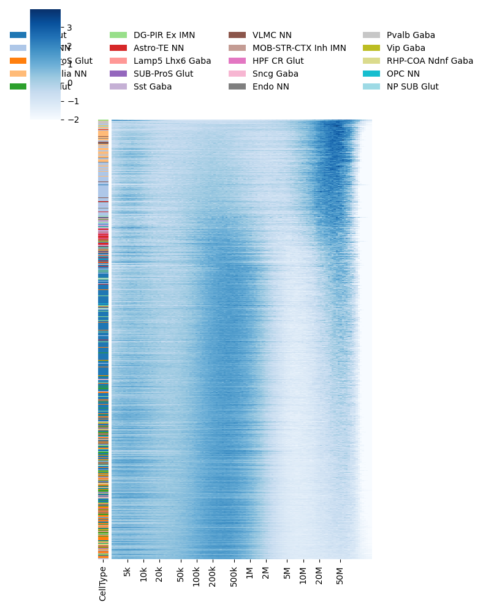
meta = meta.sample(frac=1)
leg = meta.groupby(hue)['ratio'].median().sort_values().index[::-1]
# leg = ['Neuron', 'Neonatal Neuron 1', 'Neonatal Neuron 2',
# 'Cortical L2–5 Pyramidal Cell', 'Cortical L6 Pyramidal Cell', 'Interneuron', 'Medium Spiny Neuron',
# 'Hippocampal Pyramidal Cell', 'Hippocampal Granule Cell',
# 'Neonatal Astrocyte', 'Adult Astrocyte',
# 'Oligodendrocyte Progenitor', 'Mature Oligodendrocyte', 'Microglia Etc.',
# 'Unknown'
# ]
meta = pd.concat([meta[meta[hue]==xx] for xx in leg], axis=0)
meta
| mCCCFrac | mCGFrac | mCHFrac | FinalmCReads | DissectionRegion | Plate | Col384 | Row384 | Slice | Sample | ... | InputReads | PassBasicQC | PlateNormCov | CEMBARegion | MajorRegion | SubRegion | CellType | short | long | ratio | |
|---|---|---|---|---|---|---|---|---|---|---|---|---|---|---|---|---|---|---|---|---|---|
| CEMBA191127_9H_1-CEMBA191127_9H_2-E5-AD002 | 0.005490 | 0.748052 | 0.016909 | 3059497 | HPF-2 | CEMBA191127_9H_1 | 8 | 9 | 9 | CEMBA191127_9H | ... | 4770608 | True | 1068.446656 | 9H | HPF | HIP | Sncg Gaba | 0.010922 | 0.006216 | 0.813273 |
| CEMBA191127_8E_1-CEMBA191127_8E_2-A1-AD010 | 0.007641 | 0.791745 | 0.031496 | 785552 | HPF-1 | CEMBA191127_8E_2 | 1 | 0 | 8 | CEMBA191127_8E | ... | 1281618 | True | 780.091360 | 8E | HPF | HIP | Sncg Gaba | 0.010183 | 0.004540 | 1.165397 |
| CEMBA191127_11F_5-CEMBA191126_HCV_9-H8-AD008 | 0.007111 | 0.789343 | 0.026207 | 1508188 | HPF-3 | CEMBA191126_HCV_9 | 14 | 15 | 10 | CEMBA191126_HCV | ... | 2588150 | True | 168.795523 | 10D3C | HPF | HIP | Sncg Gaba | 0.011634 | 0.003654 | 1.670891 |
| CEMBA191126_HCV_7-CEMBA191126_HCV_8-F2-AD002 | 0.006639 | 0.780830 | 0.026208 | 1694059 | HPF-3 | CEMBA191126_HCV_7 | 2 | 11 | 10 | CEMBA191126_HCV | ... | 2632716 | True | 78.596038 | 10D3C | HPF | HIP | Sncg Gaba | 0.011012 | 0.004542 | 1.277754 |
| CEMBA191126_HCV_5-CEMBA191126_HCV_6-A3-AD007 | 0.007719 | 0.790909 | 0.032496 | 1424787 | HPF-3 | CEMBA191126_HCV_6 | 4 | 0 | 10 | CEMBA191126_HCV | ... | 2206076 | True | 2.109670 | 10D3C | HPF | HIP | Sncg Gaba | 0.011222 | 0.003686 | 1.606122 |
| ... | ... | ... | ... | ... | ... | ... | ... | ... | ... | ... | ... | ... | ... | ... | ... | ... | ... | ... | ... | ... | ... |
| CEMBA191127_10F_3-CEMBA191127_10F_4-F12-AD001 | 0.004471 | 0.695138 | 0.005538 | 1222889 | HPF-2 | CEMBA191127_10F_3 | 22 | 10 | 10 | CEMBA191127_10F | ... | 2157972 | True | 191.810682 | 10F | HPF | HIP | Microglia NN | 0.006423 | 0.013642 | -1.086840 |
| CEMBA191126_HCV_5-CEMBA191126_HCV_6-B7-AD008 | 0.004197 | 0.719499 | 0.004973 | 1275457 | HPF-3 | CEMBA191126_HCV_6 | 12 | 3 | 10 | CEMBA191126_HCV | ... | 2077050 | True | 1.888559 | 10D3C | HPF | HIP | Microglia NN | 0.006539 | 0.015163 | -1.213512 |
| CEMBA191127_11F_5-CEMBA191126_HCV_9-D2-AD004 | 0.004504 | 0.716945 | 0.005678 | 1669339 | Cortex-10 | CEMBA191127_11F_5 | 3 | 6 | 11 | CEMBA191127_11F | ... | 2576106 | True | 111.803563 | 11F | HPF | HIP | Microglia NN | 0.007294 | 0.013608 | -0.899655 |
| CEMBA191126_8J_1-CEMBA191126_8J_2-A10-AD008 | 0.004064 | 0.670301 | 0.005129 | 1007709 | HPF-1 | CEMBA191126_8J_2 | 18 | 1 | 8 | CEMBA191126_8J | ... | 1593662 | True | 0.805774 | 8J | HPF | HIP | Microglia NN | 0.006934 | 0.014221 | -1.036222 |
| CEMBA191126_8J_1-CEMBA191126_8J_2-D1-AD008 | 0.004103 | 0.674838 | 0.005355 | 757372 | HPF-1 | CEMBA191126_8J_2 | 0 | 7 | 8 | CEMBA191126_8J | ... | 1332808 | True | 0.605602 | 8J | HPF | HIP | Microglia NN | 0.007366 | 0.010767 | -0.547753 |
5082 rows × 25 columns
decay = decay.loc[meta.index]
offset = [0]
count = meta[hue].value_counts().loc[leg].values
for i in range(len(leg)):
offset.append(offset[-1]+count[i])
offset = np.array(offset)
meta['Cis/Trans'] = meta['CisLongContact'] / meta['TransContact']
import matplotlib.patches as patches
from scipy.stats import zscore
fig, axes = plt.subplots(3, 1, gridspec_kw={'height_ratios': [20,1,1]}, figsize=(5,3), sharex='all')
ax = axes[0]
ax.imshow(zscore(decay, axis=1).T, cmap='Blues', aspect='auto', interpolation='none', vmin=-2, vmax=4)
ax.set_xticks([])
ax.set_yticks([np.log2(xx/2500)/0.125 for xx in [5000, 20000, 100000, 500000, 2000000, 10000000, 50000000]])
ax.set_yticklabels(['5k', '20k', '100k', '500k', '2M', '10M', '50M'])
# ax = axes[1]
# ax.imshow(meta['Cis/Trans'].values[:,None], aspect='auto', interpolation='none', cmap='bwr')
# ax.axis('off')
# ax = axes[2]
# ax.imshow(meta['mCHFrac'].values[:,None], aspect='auto', interpolation='none', vmax=0.03)
# ax.axis('off')
ax = axes[1]
ax.axis('off')
# ax.set_ylabel('MajorType', rotation=0)
for i,label in enumerate(leg):
rect = patches.Rectangle((offset[i], 0), offset[i+1]-offset[i], 1, linewidth=0, edgecolor='none', facecolor=colordict[label])
ax.add_patch(rect)
# ax.text(np.mean(offset[i:(i+2)]), -0.2, label, rotation=90, fontsize=10, horizontalalignment='left', verticalalignment='top')
ax = axes[2]
ax.imshow(np.log2(meta['Cis/Trans'][None, :]), vmin=0, vmax=2, cmap='viridis', aspect='auto', interpolation='none')
ax.axis('off')
for ax,xx in zip(axes, ['Contact Distance', 'MajorType', 'Cis/Trans']):
ax.set_title(xx, fontsize=10)
plt.tight_layout()
plt.savefig(f'{indir}../plot/cell_{meta.shape[0]}_majortype_decay.pdf', transparent=True, dpi=300)
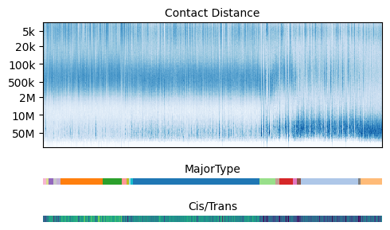
f'{indir}../plot/cell_{meta.shape[0]}_majortype_decay.pdf'
'/gale/netapp/entex/HBA/snm3C/decay/Liu2021/../plot/cell_5082_majortype_decay.pdf'
from scipy.stats import pearsonr
pearsonr(meta['Cis/Trans'], meta['ratio'])
(0.730151733899249, 0.0)
fig, ax = plt.subplots(figsize=(6,5))
sns.boxplot(data=meta, x=hue, y='ratio', order=leg, ax=ax, palette=colordict, showfliers=False)
ax.set_xticklabels(ax.get_xticklabels(), rotation=90)
plt.tight_layout()
plt.savefig(f'{indir}../plot/cell_{meta.shape[0]}_majortype_decay_boxplot.pdf', transparent=True, dpi=300)
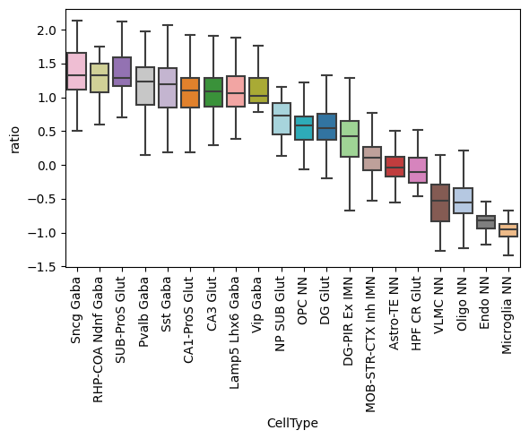